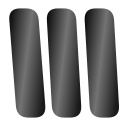
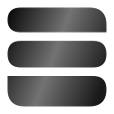
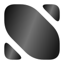

둥근 도형 사이의 간격을 좁히고, 정사각형 안에 응집된 형태로 다듬은 8안.
C01–C08 · 단색 / 반전 / 흑백 그라데이션 · 32px / 24px 심볼 비교
둥근 삼각형 두 개 · 정사각형 대각 분할
높이가 다른 네 블록 · 촘촘한 어긋남
좁은 사선 모듈 · 작은 간격의 수직 밀집

맞물리는 두 덩어리 · 둥근 안쪽 꺾임
곡면 세 줄 · 좌우 끝을 맞춘 덩어리


같은 외곽 · 서로 다른 가로세로 비율
두 곡면 조각 · 좁고 흐르는 중앙 여백
대각의 긴 면 · 양끝을 채우는 곡면 조각

선택한 안이 없습니다. 필터를 끄고 번호 옆 체크박스로 골라주세요.